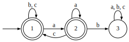

While the majority of the functionality of this package comes from algebraic manipulation, some problems are just not amenable to that setting. For those times, one might wish to work directly with finite automata. Here we offer one mechanism for importing machines and some decision problems that cannot be handled with semigroups alone.
‣ AutomatonFromATT( stream ) | ( operation ) |
Returns: an automaton
Import an automaton from AT&T-style tabular text read from stream. Each row contains no more than five whitespace-separated fields. An empty row is ignored. A row with one or two fields represents an accepting state, perhaps with a weight which is ignored here. A row with three, four, or five fields represents a transition. The first, second, and third fields always represent the source, destination, and input symbol, respectively, and subsequent fields are again ignored.
For example the following text represents the pictured automaton, which itself represents strings over \Sigma=\{a,b,c\} not containing an "ab"-substring.
1 2 a 1 1 b 1 1 c 1 2 2 a 2 3 b 2 1 c 2 3 3 a 3 3 b 3 3 c

A language is locally testable in the strict sense (strictly local) iff there is some value k and some set S of anchored words of length at most k such that the words in the language are all and only those that do not contain any element of S as a substring when anchored. As this class is not closed under complement, there can be no characterization for the class based on the syntactic semigroup alone without further metadata. But all is not lost.
Characterized by closure under substitution of suffixes following shared length-k substrings, the strictly local languages are associated with automata that synchronize after no more than k steps [ELM+08]. In other words, from any state p it is necessarily the case that following a length-k word w will lead to the same state as it would when following w from any other state q.
There exists an exponential-time algorithm for deciding membership in this class, which admits simultaneously extracting the grammar of forbidden substrings [RL19], but the polynomial-time process of [ELM+08] is used here. If the trim, minimal automaton has states Q, then class membership is decidable using the subgraph of the product construction containing only nodes of the form Q\times Q whose two components are inequal. The language is strictly local iff this graph is acyclic.
‣ IsStrictlyLocal( aut ) | ( property ) |
‣ IsTierStrictlyLocal( aut ) | ( property ) |
Returns: true or false
Determine if the language represented by aut is strictly k-local for some k that is, if it is definable as a conjunction of forbidden substrings. A language is tier-based strictly local iff there is some subset T of its alphabet (a tier of salient symbols) such that symbols not in T may be freely inserted and deleted and the projection to T is strictly local [Lam22].
The constructions used in deciding (tier-based) strict locality are exposed in case they might be useful for other purposes. Recall that salience has an algebraic characterization as well, which should be preferred when possible.
‣ DoubletonGraph( aut ) | ( operation ) |
Returns: an automaton
Construct an automaton whose underlying graph is the pair-graph used in deciding strict locality. The initial state is the pair containing two copies of the initial state of aut, and the final states are all pairs in which both elements are accepting.
‣ SalienceProjection( aut ) | ( operation ) |
Returns: an automaton
Remove nonsalient symbols, those that are freely insertable and deletable. For a language in a tier-based class, this provides the projection under which the grammar operates. See also ProjectedSubsemigroup (3.1-6).
generated by GAPDoc2HTML